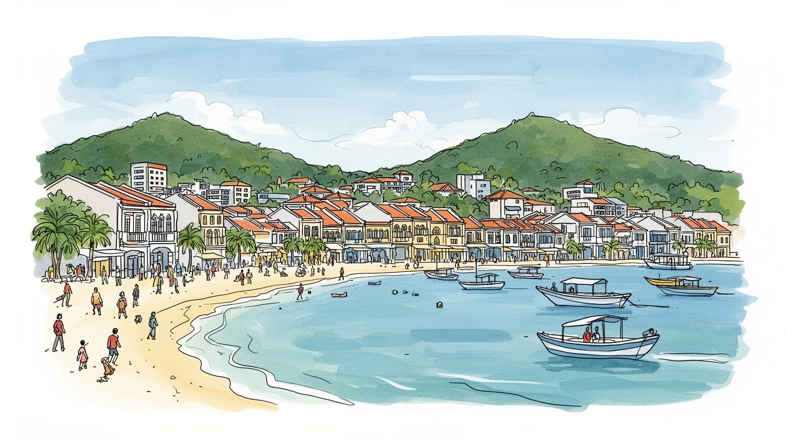
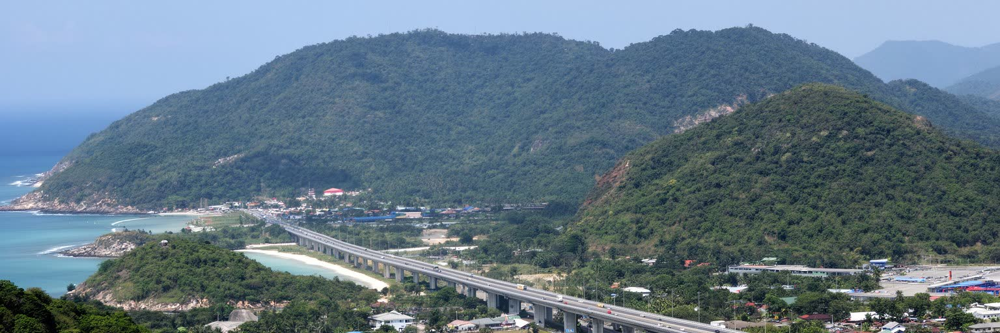
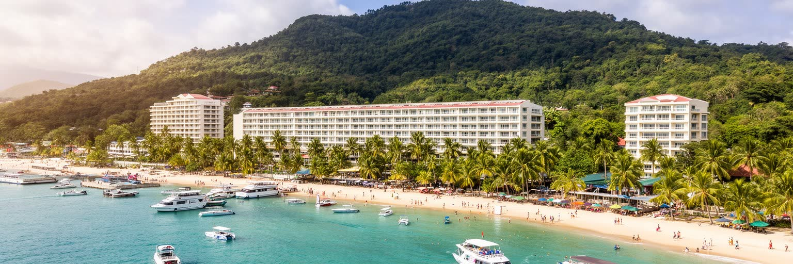
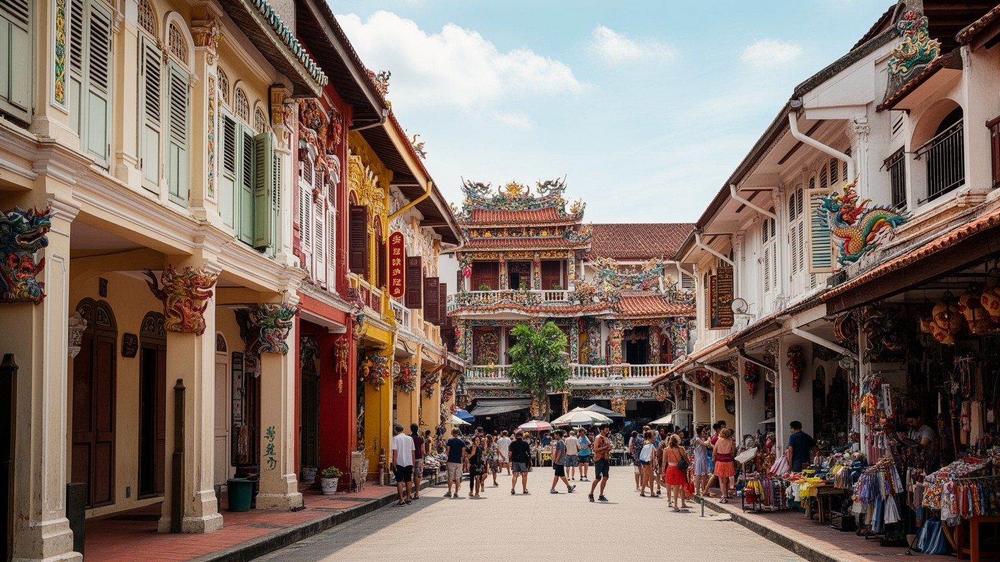
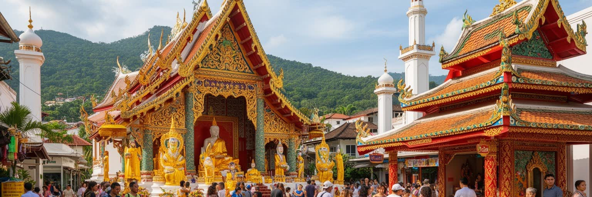
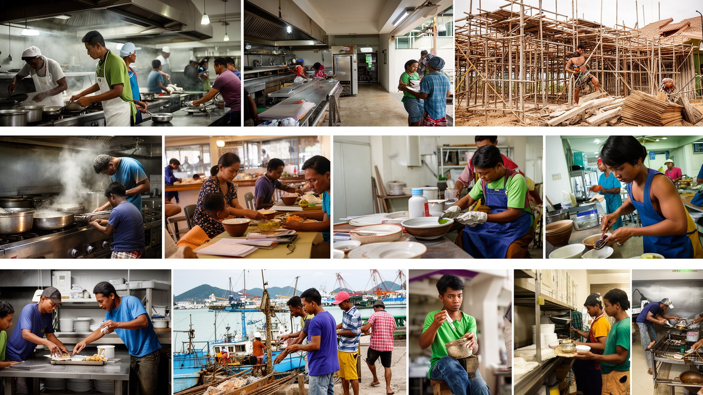
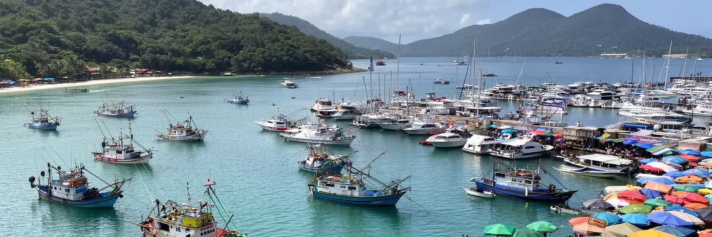
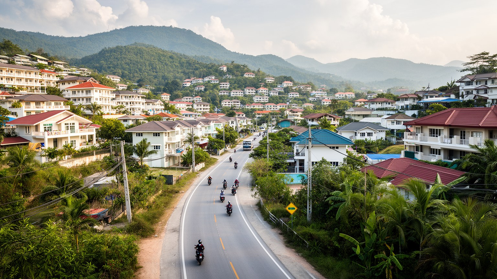
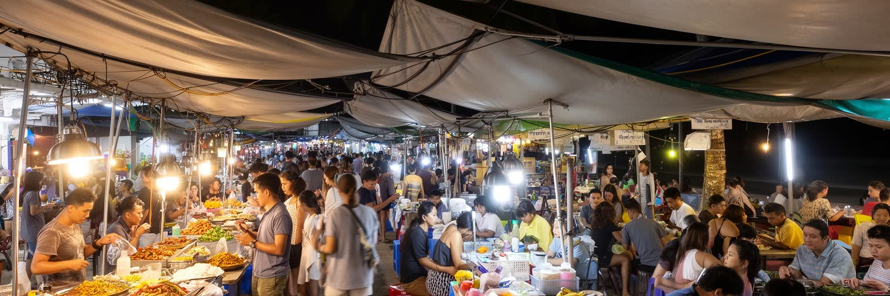
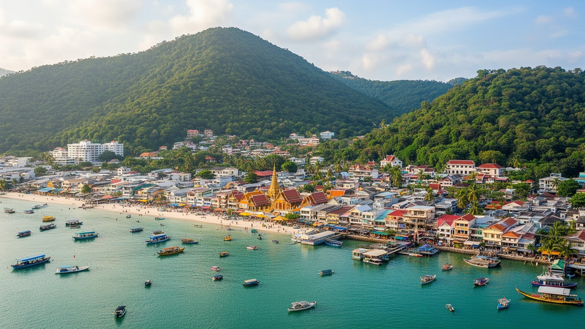

地政学
プーケットはアンダマン海の観光拠点であり、マラッカ海峡へ続く航路、空港、港、津波リスクを抱えます。タイ本土と橋で結ばれ、観光外交、海洋安全保障、国境を越える労働移動も島の生活に影響します。位置も要です。

🇹🇭 タイ / アンダマン海 / World City Atlas
ビーチリゾートとして知られる一方で、プーケットは空港、港、旧市街、移民労働、華人寺院、イスラム共同体、漁村、住宅開発、津波の記憶が重なる島の都市です。
都市の骨格
プーケットは砂浜だけの観光地ではありません。島の中央を走る丘陵、東岸の港と県都、西岸のビーチ、北部の空港、南部の岬が、観光と生活を細かく分けています。

プーケットはアンダマン海の観光拠点であり、マラッカ海峡へ続く航路、空港、港、津波リスクを抱えます。タイ本土と橋で結ばれ、観光外交、海洋安全保障、国境を越える労働移動も島の生活に影響します。位置も要です。
ホテル、飲食、空港、港湾、建設、不動産、ツアー、清掃が雇用と暮らしを支えます。繁忙期の収入は大きい一方、季節変動、家賃上昇、移民労働者の権利、観光依存の脆さが焦点です。賃金と住まいも大きな論点です。
華人寺院、上座部仏教寺院、ムスリムの村、精霊信仰、菜食祭が島の暦を作ります。錫鉱山、交易、移民、婚姻、海の信仰が重なり、多層の島文化を残します。島の祈りと祭りは古い市場や学校、港の朝にも広がります。
旅行者はビーチ、旧市街、ナイトマーケット、離島ツアーを楽しみますが、住民は渋滞、水不足、住宅費、学校、医療、雨季の移動と向き合います。観光の成功は、生活を守れるかで決まります。公共空間も焦点です。

プーケットを理解する入口は、島の地形を平らなリゾート地として見ないことです。西岸にはパトン、カロン、カタ、カマラなどの砂浜が連なり、海を向いたホテルや飲食店が観光の表情を作ります。東岸にはプーケットタウン、港、行政機能、学校、市場、古い商業地があり、住民の日常はむしろこちらに深く根を張ります。島の中央には南北に丘陵が走り、短い距離でも道路は曲がり、雨季には斜面の崩れや冠水が移動を妨げます。北部の空港は世界から島へ人を運ぶ入口であり、本土へ続く橋は食料、建材、労働者、燃料を通す生命線です。観光客にはビーチ間の移動が気軽に見えても、渋滞、タクシー料金、公共交通の薄さ、バイク事故は生活条件を大きく左右します。海岸、丘、港、空港を重ねると、プーケットは孤立した楽園ではなく、限られた土地に観光、物流、住宅、災害リスクが圧縮された島の都市だと読み取れます。さらに島内の道路は観光バス、空港送迎、通勤バイク、建設車両、救急車が同じ幹線へ集中します。地形が逃げ道を少なくするため、一つの事故や豪雨が島全体の時間を遅らせます。交通を読むことは、観光の便利さと住民の負担を同時に読むことです。道路、港、空港を誰が優先して使えるのかは、島の公平性を映します。緊急時の避難、通学、通院、仕入れまで含めて見ると、地形は社会の条件になります。

プーケットの経済は観光によって強く動きます。高級リゾート、家族向けホテル、バックパッカー向け宿、ビーチクラブ、スパ、ダイビング、離島ツアー、ナイトマーケット、国際空港が一体となり、島全体に収入を広げます。しかし、その収入は季節と国際情勢に左右されます。乾季にはホテル料金が上がり、道路とビーチは混雑し、従業員は長時間働きます。雨季には客足が落ち、店の売上や日雇いの仕事が減ります。感染症、航空便の変化、為替、政治不安、自然災害も、遠い出来事で終わらず島の家計に響きます。観光業はホテルのフロントだけで成り立つのではありません。清掃、厨房、洗濯、警備、船員、運転手、通訳、マッサージ師、建設作業員、食品卸、修理業が支えています。観光都市としての豊かさを見るには、海辺の消費額だけでなく、繁忙期と閑散期をどう乗り切るか、働く人が家賃を払い続けられるかまで見る必要があります。外からの投資は雇用を生む一方、利益が島外へ流れる構造もあります。地元の小店が観光客を得られるか、大規模ホテルの調達が地域農漁業と結びつくかで、観光収入の残り方は変わります。経済の強さは、客数だけでなく危機後に仕事を戻せる幅で測られます。島内で語学、調理、救命、船舶、観光案内の技能を育て、若い人がサービス業以外の選択肢も持てるかは焦点です。観光依存を弱点にしないには、教育、医療、公共部門、地域商業の厚みが欠かせません。

プーケットタウンの旧市街は、海辺のリゾートとは違う島の記憶を見せます。色彩のあるショップハウス、アーケード、華人寺院、古い商店、市場、学校、家族経営の食堂は、錫鉱山と交易で栄えた時代の名残です。福建系を中心とする華人移民は、労働、商業、金融、宗教、料理を通じて島の都市文化を作りました。ポルトガル風と呼ばれる建築様式も、単なる写真の背景ではなく、熱帯の雨を避ける歩廊、商売と住居を重ねる間取り、家族と同業者のネットワークを映しています。近年はカフェ、ギャラリー、週末市場、ホテル改修によって観光地として再評価され、家賃や店舗構成も変わっています。旧市街の魅力を守るには、外観保存だけでなく、地元の食堂、寺院の行事、生活市場、学校、住民の声を残すことが大切です。古い街並みは過去を飾る舞台ではなく、島の商業と移民の記憶が今も使われる生活空間です。観光客が歩く通りの裏には、洗濯物、修繕待ちの木窓、朝の仕入れ、家族の祭壇があります。保存が表面の色だけに偏ると、町は撮影用の背景になってしまいます。建物を使い続ける人の仕事と暮らしを守ることが、旧市街の本当の保存です。旧市街の再生は、若い店主や芸術家に機会を与える一方、古い住民を押し出す危険もあります。街角の掲示、地元紙、学校の連絡、SNSが行事や通行止めを伝える細かな情報網も、文化を動かす土台です。

プーケットの信仰は、観光パンフレットの寺院紹介よりずっと複雑です。上座部仏教の寺院は地域の葬送、徳を積む行事、学校や村の活動を支え、華人寺院は商売、家族、病気平癒、航海の安全と結びつきます。島にはムスリムの村も多く、モスク、ハラール食、漁業、家族関係が海辺の生活を形づくります。よく知られる菜食祭は、苦行や行列の強烈なイメージで語られがちですが、実際には華人共同体の記憶、身体の浄化、町内の結束、観光客の視線、交通規制、医療と安全管理が重なる大きな都市行事です。信仰は古い伝統として保存されるだけでなく、移民労働者、新しい住民、観光客が増える中で毎年調整されています。祭礼の音、香、食、寄付、清掃、警備を読むと、プーケットの文化が海辺の余暇だけではなく、祈りと共同作業によって支えられていることが見えてきます。宗教施設は災害時の助け合い、寄付、言語の違う住民への相談場所にもなります。観光客が寺院を訪れるとき、そこは鑑賞の対象である前に、誰かの家族行事や地域の約束が行われる場です。その距離感を保つことが、島の文化を尊重する入口になります。異なる信仰が同じ島で暮らすには、食、服装、音、休日、葬送をめぐる細かな配慮が欠かせません。学校や市場、港の職場でその調整が日々続くことも、プーケットの都市文化の一部です。

プーケットの観光体験は、国境を越えて来る労働者にも支えられています。ミャンマー、ラオス、カンボジアなどから来た人々は、建設、ホテル清掃、厨房、漁業、港湾、洗濯、庭仕事、介護、屋台、修理の現場で働きます。観光客に見える笑顔のサービスの背後には、長い勤務時間、寮や狭い部屋、言語の壁、在留資格、医療へのアクセス、賃金未払いの不安があります。島では家賃と物価が観光地価格になりやすく、低賃金の仕事ほど生活の余裕が削られます。一方で、移民労働者は島の食、宗教、言語、学校、送金を通じて地域社会の一部にもなっています。労働を単なる人手不足の解決策として見ると、都市の持続性を見誤ります。プーケットが国際観光地であり続けるには、ホテルの品質や空港の利便性だけでなく、働く人が安全に住み、医療を受け、子どもを育て、搾取から守られる仕組みが必要です。サービスの滑らかさは、労働の尊厳と切り離せません。労働者の姿が客室や厨房の奥へ隠れるほど、困難は社会から見えにくくなります。多言語の相談窓口、労働契約の確認、学校への接続、事故時の補償は、観光品質を守る制度でもあります。寮の近くの小店、送金所、携帯電話店、母語のSNSが、働く人の日々の情報網になります。雇用の底を支える人が不安定なままなら、観光都市の信頼も不安定になります。

プーケットの海は、白い砂浜と夕景だけではありません。東岸の港、漁船、マリーナ、離島航路、市場、造船や修理の小さな現場が、島の海上生活を支えています。観光客が乗るボートはピピ諸島、パンガー湾、ラチャ島へ向かい、漁師は天候、燃料費、漁場、環境規制に向き合います。高級ヨットやマリーナは国際的な富を呼び込みますが、その近くには魚を売る市場、船を直す作業、海の民の集落、イスラム共同体の生活があります。海岸開発が進むほど、漁業の足場や公共の海辺は狭くなりやすく、サンゴ礁、マングローブ、海草藻場への負荷も増えます。海を観光資源としてだけ扱うと、働く海と生態系の価値が見えなくなります。プーケットを読むには、波打ち際のホテルから少し離れ、港の朝、市場の匂い、船員の待機、潮位の変化、漁村の祈りまで見る必要があります。そこに、島が海から稼ぎ、海に制約される都市であることが表れます。海洋保護は漁業と対立するだけの制度ではありません。水質、ゴミ、係留、禁漁期、観光船の速度を調整できれば、観光も漁業も長く続けられます。浜辺ではサーフィン、パドルボード、ビーチサッカーも行われ、子どもも砂を蹴ります。遊びと救助、潮の知識が近くにあります。港の混雑、燃料価格、天候情報、救助体制は、派手ではありませんけれど海の都市の基盤です。

プーケットの暮らしは、観光地の華やかさとは違う負担を抱えます。ホテルやヴィラの開発が進むと、土地価格と家賃は上がり、住民や低賃金の労働者は職場から遠い場所へ移らざるを得ません。丘陵が多い島では、距離が短くても移動に時間がかかり、雨季の道路、渋滞、バイク事故、駐車場不足が日常の負担になります。学校、職業訓練、病院、市場、行政窓口、寺院、モスクへ行く道は、観光客の動線とは別の都市地図を作っています。外国人長期滞在者、富裕層向け住宅、地元の家族、移民労働者の寮が近接しても、使う店、通う学校、受けられる医療、言語の壁は大きく違います。生活都市としてのプーケットを評価するには、ビーチの近さだけでなく、働く人が通勤できるか、子どもが安全に学校へ行けるか、高齢者が医療へ届くかを見る必要があります。住宅と移動の問題は、観光都市の裏側ではなく、観光を持続させる前提になっています。公共交通が弱いほど、低所得の住民はバイクや相乗りに頼り、事故や燃料費の負担を受けます。島の成長を考えるなら、住宅供給、学校配置、病院への道、雨を避けられる歩行空間まで一緒に整える必要があります。地域のサッカー場や公園は、子どもと高齢者が観光消費から離れて過ごす貴重な余白です。住み続ける人の視点を失うと、島は働く場所であっても暮らす場所ではなくなります。

プーケットの食は、タイ南部の辛さ、華人移民の料理、ムスリムの食文化、海産物、観光客向けの国際メニューが混ざって成り立ちます。旧市街の麺、ロティ、カレー、菓子、市場の朝食、漁港近くの食堂は、島の歴史を舌で読む入口です。一方で、ビーチ地区にはバー、クラブ、屋台、ファストフード、深夜営業の店が集まり、観光客の時間に合わせて都市のリズムを変えます。夜の経済は収入を生みますが、騒音、酒、性産業、交通事故、地域の安全、働く人の健康という問題も伴います。料理が観光商品になるほど、地元の台所や市場が高騰や混雑の影響を受けることもあります。プーケットの食文化を豊かにしているのは、高級レストランだけではなく、朝早く仕入れる市場の人、屋台を畳む家族、漁師、移民労働者、宗教上の食のルールです。食と夜の街を読むことは、楽しさの裏にある労働、近隣生活、信仰、健康を一緒に見ることです。観光客向けに味や価格が変わると、住民が日常的に使う店との距離が広がります。ライブ音楽、ムエタイ興行、週末市場、ショッピングモールは、消費だけでなく若者の社交と小商いの場にもなります。食卓と夜の街は、島が誰の時間で動いているかを映します。市場の値段、魚の鮮度、屋台の場所、酒場の終業時間は、観光と生活の折り合いを示す細かな指標です。食の豊かさは、住民が普段使えることではじめて都市の文化になります。
プーケットは熱帯モンスーン気候の島であり、雨季と乾季の差が生活と観光を大きく変えます。乾季は海が穏やかで観光に向きますが、水需要が増え、ホテル、プール、ゴルフ場、住宅開発が限られた水資源へ負荷をかけます。雨季には豪雨、冠水、斜面崩壊、海の荒れ、交通事故が増え、屋外労働や小さな店ほど影響を受けます。二〇〇四年のインド洋津波の記憶は、避難路、警報、学校教育、海辺の開発を考える基礎です。さらに気候変動は海面上昇、サンゴ白化、海岸侵食、暑熱、感染症リスクを強めます。観光都市は美しい環境を売りにしますが、その環境を傷つける形で成長すれば、将来の魅力も生活の安全も失われます。防災は看板を立てるだけでは足りません。多言語で届く警報、避難しやすい道路、マングローブや湿地の保全、斜面開発の管理、水の節約、暑さから逃げられる公共空間が必要です。気候リスクは島の弱点であると同時に、都市計画の質を試す基準です。サンゴ礁やマングローブは景観資源であるだけでなく、波を弱め、水を浄化し、漁業を支える防災インフラでもあります。短期の開発利益を優先して自然の緩衝帯を失えば、被害は後で住民と観光業に返ってきます。災害時には観光客、移民労働者、高齢者へ同じ速さで情報が届くかも問われます。地元ラジオ、宿、寺院、モスク、学校、携帯通知を結ぶ情報網が、非常時の命綱になります。

プーケットは、世界的なリゾートとしての強いイメージを持つため、都市としての複雑さが見落とされやすい場所です。ビーチの背後には、旧市街の商業、華人とムスリムの共同体、寺院と祭礼、空港と港、移民労働、住宅開発、漁業、道路渋滞、津波の記憶、気候危機があります。島は美しいほど、土地と水の限界を隠しやすく、観光客が増えるほど、住民の家賃、移動、静けさ、公共空間が圧迫されます。同時に、観光は多くの家庭に収入をもたらし、国際的な交流、教育機会、文化の発信も支えています。大切なのは、プーケットを楽園か搾取の場かのどちらかで単純化しないことです。海を楽しむ人、ホテルで働く人、寺院を支える人、漁に出る人、学校へ通う子ども、長期滞在する外国人、雨季に店を守る家族が同じ島を共有しています。プーケットを読むことは、観光都市がどうすれば自然、信仰、労働、住宅を壊しすぎずに開かれ続けられるかを考えることです。その問いは、多くの島嶼都市に共通する未来の課題でもあります。都市の価値は、海の色やホテルの数だけでは決まりません。危機のあとに仕事を戻せるか、自然を回復できるか、異なる宗教と出身の住民が尊重されるか、働く人が島に住み続けられるかで測られます。プーケットは観光の成功と島の限界を同時に示す、現代的な都市の教材です。